后续修正v5：门与墙共用遮挡判定，修正横移时门单独变化及主门／对门抢交互。打开最新实机对照。F6入口保持不变；本页v4截图为修正前记录。
F6仍打开 scenes/dev/cryo_4f_complete_v3.tscn。无需换工程。遮挡时不透明度从12%提高到42%，双面显示原墙板材质；认证门只在真正挡住人物时淡化，不受侧面大范围探针影响。门后灰色场景本轮未改。
按E：小窗黄闪1.5秒 → 红灯拒绝1.5秒 → 暗色待机，门保持关闭；不再弹权限不足文字框。停运电梯遵从原专用设定，不运行认证黄红灯。实现与验证说明 · 功能回归 · 远／近透明值及灯语记录
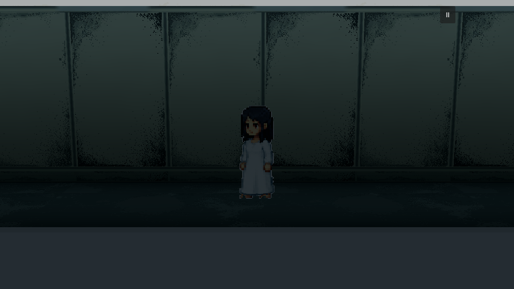
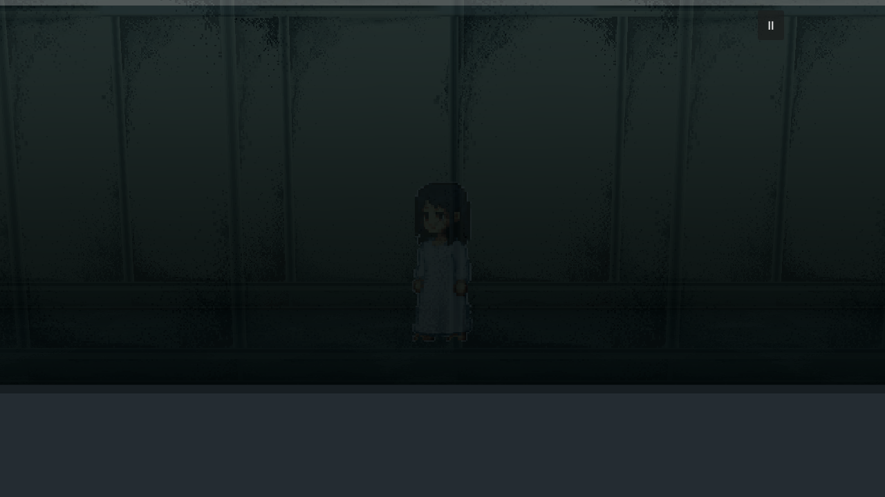
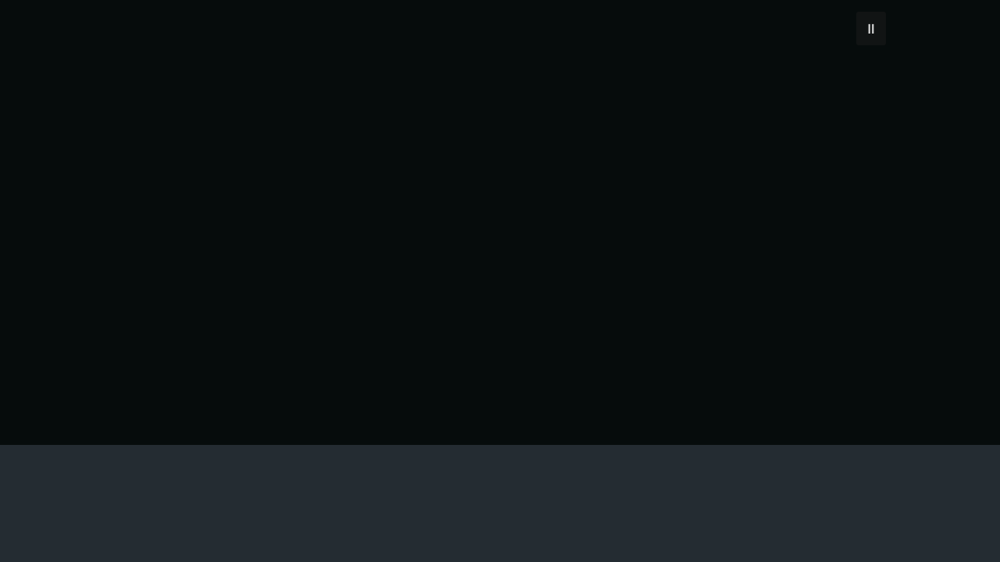
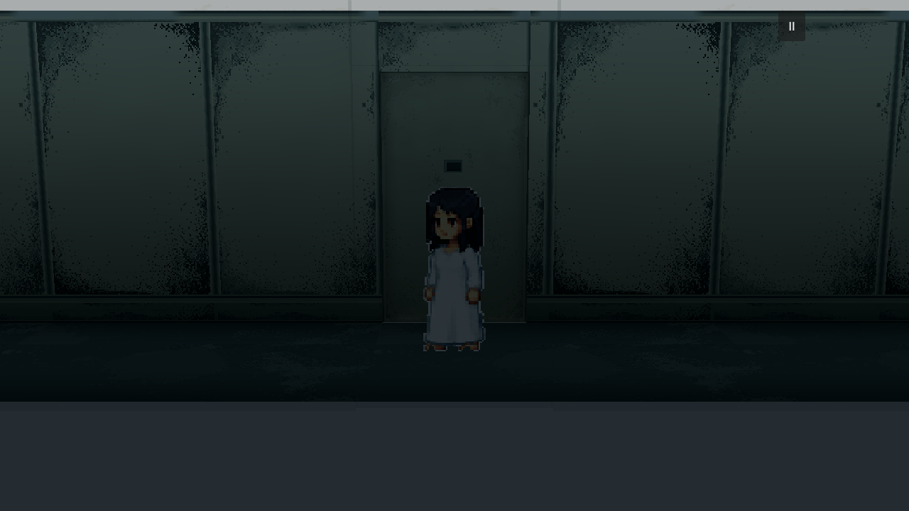
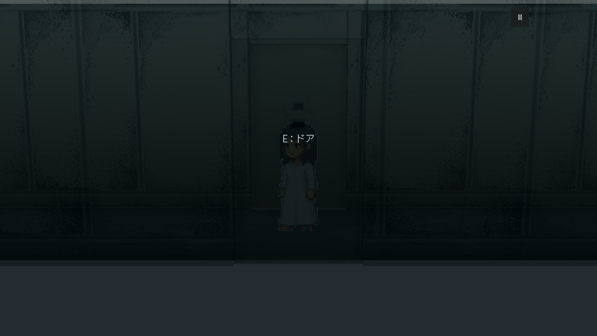
对门位于相机与人物之间时维持同一半透明程度；远近实测门面与门体均为0.42。侧面门不在人物视线内则保持实体。认证窗自身只按认证状态改变颜色。
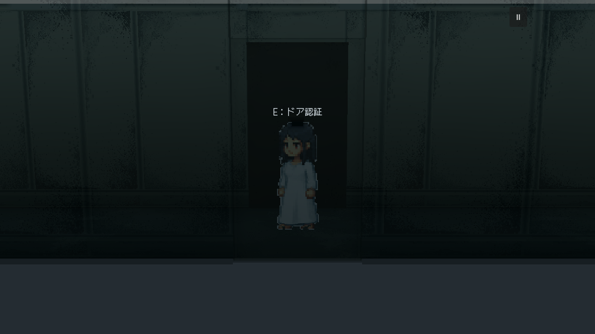
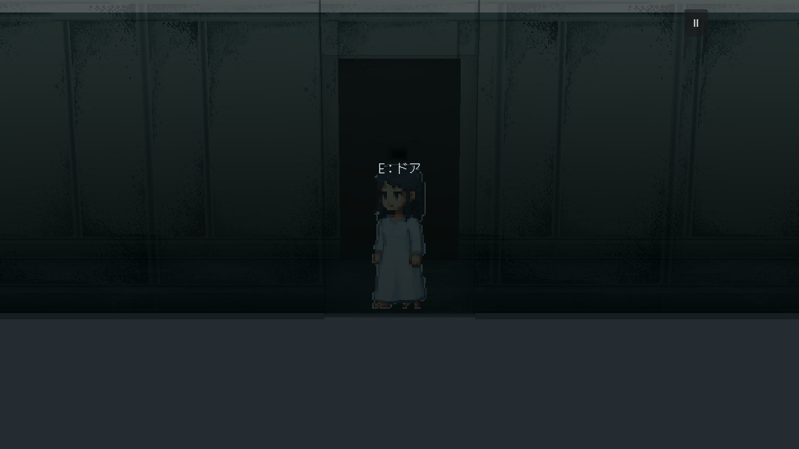
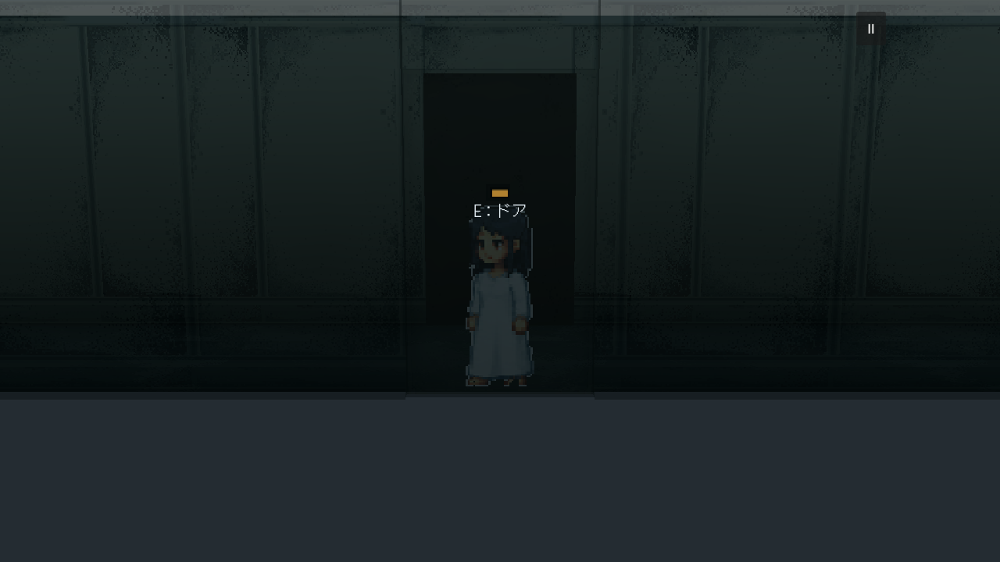
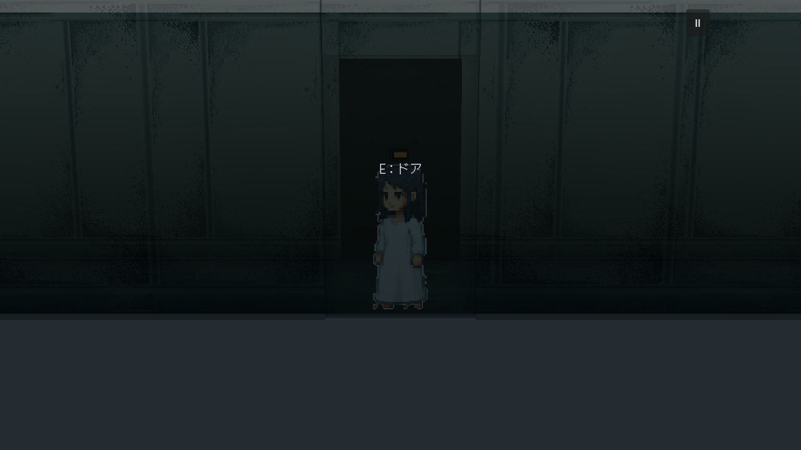
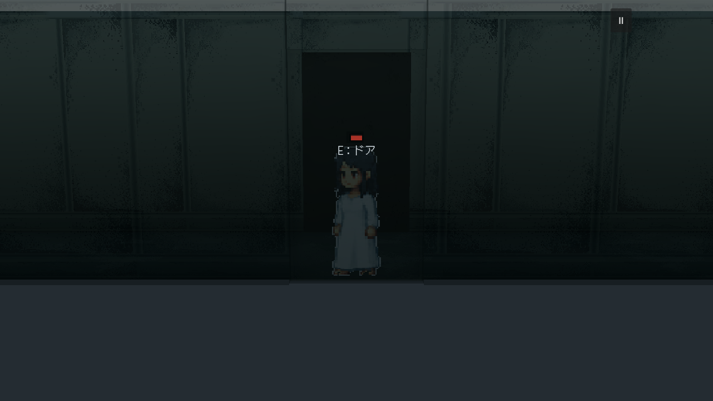
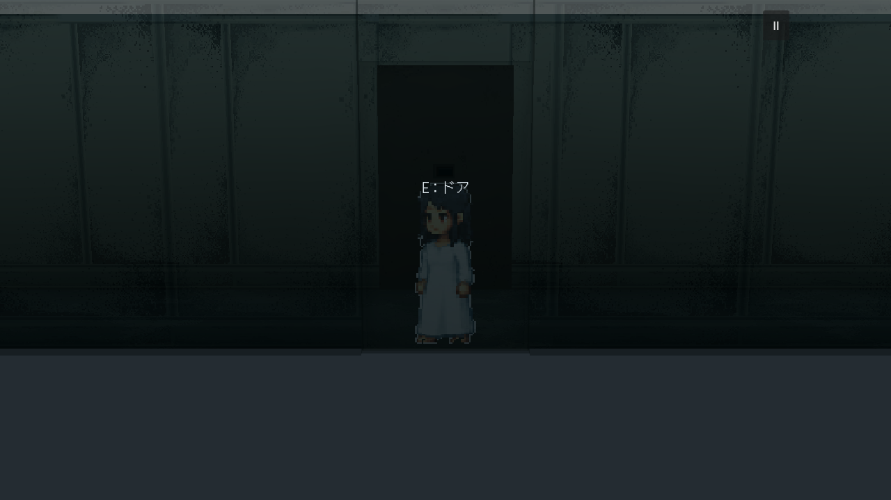
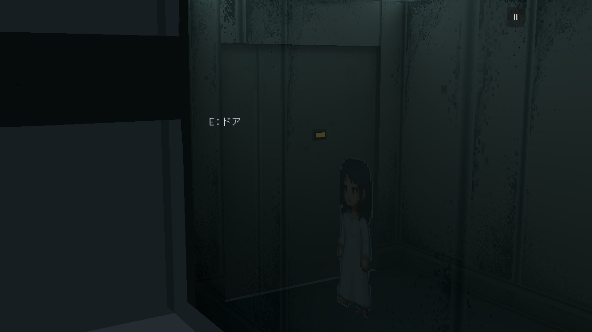
所有原图1280×720，点击查看；静态光图和像素颜色图未改，未新增生成。Room1原成功绿灯／黑门洞两次E流程保持，房后灰色背景留待后续。